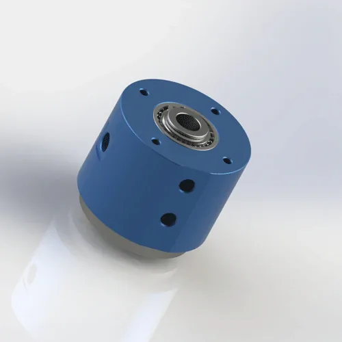
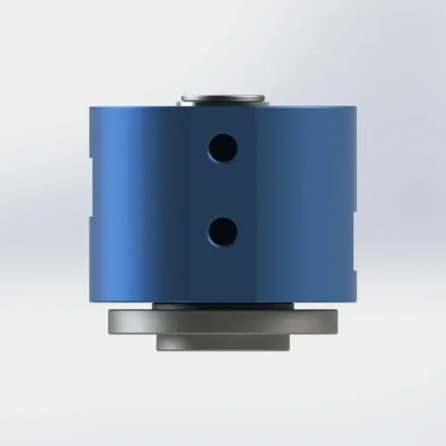
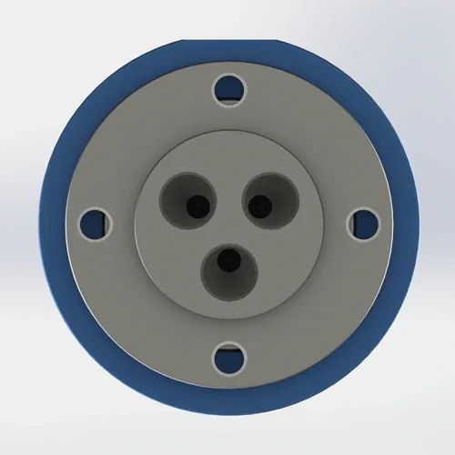

Dual-inlet, triple-outlet G1/8 threaded rotary joint with 4mm orifice for pneumatic and light fluid applications. PTFE composite seal, 6061 aluminum alloy body. Ø64 × 61.2 mm, 220 g. Two independent inlets feed three outlets — ideal for CNC 4th/5th axis pneumatic lines, robotic welding turntables, and compact automated assembly stations. Lead time is confirmed for the selected model and order.
BP-2P-0002 is a dual-inlet, triple-outlet threaded rotary joint designed for compact multi-passage pneumatic distribution. The 4mm orifice provides balanced flow across all three outlets when supplied from two inlets. The 6061 aluminum alloy body keeps weight at 220 g, while the deep-groove ball bearing supports smooth rotation up to 300 RPM. The PTFE composite seal provides chemical resistance across air, water, and coolant media with idle torque ≤0.15 N·m.
| Model Number | BP-2P-0002 |
|---|---|
| Passages | 2-in-3-out (2 inlets, 3 outlets) |
| Orifice Size | 4 mm |
| Thread Type | G1/8 (BSPP) |
| Rotor Connection | 4-M6 (rotating side) |
| Stator Connection | 4-M6 + 2-M8 (fixed side) |
| Mount Type | G1/8 Threaded |
| Max Pressure | 1 MPa (10 bar / 145 psi) — derate to 0.7 MPa for continuous water duty |
| Max Speed | 300 RPM — derate to 200 RPM for continuous water or coolant |
| Compatible Media | Air, Water, Water-Soluble Coolant, Light Hydraulic Oil |
| Leakage acceptance | Specified by model; confirm test criteria before ordering. |
| Body Material | 6061 aluminum alloy |
|---|---|
| Seal Type | PTFE Composite Seal |
| Bearing Type | Deep Groove Ball Bearing |
| Operating Temperature | -20°C to +80°C |
| Net Weight | Approx. 0.22 kg (220 g) |
| Dimensions | Ø64 × 61.2 mm |
| Idle Torque | ≤0.15 N·m |
| Service Life | ≥8,000 hours (rated conditions) |
|---|---|
| Warranty | 12 Months |
6061 aluminum alloy body: 6061-T6 aluminum alloy with yield strength 276 MPa and density 2.70 g/cm³. The anodized surface provides corrosion resistance for intermittent water and coolant exposure. At 220 g, the body is one of the lightest multi-passage rotary joints in the Begapunk catalog, making it ideal for robot EOAT and small CNC axes. Not recommended for continuous immersion in aggressive coolant without additional surface treatment.
PTFE composite seal: Polytetrafluoroethylene with glass fiber and graphite filler. Self-lubricating, chemically inert, and rated for -200°C to +260°C. The dual-inlet design uses independent seal rings per channel, ensuring no cross-contamination between the two inlet circuits. FKM O-ring provides static sealing at the housing interface.
Deep groove ball bearing: Standard single-row deep groove ball bearing with steel races and rubber seals. Pre-lubricated for life. The bearing supports radial loads from the rotating manifold and maintains concentricity of the 4mm orifice passages. Replace bearing if axial play exceeds 0.05 mm.
BP-2P-0002 is designed for compact multi-passage pneumatic applications where two independent air sources must rotate together. The threaded mount and 220 g weight make it ideal for robot arms and small machine tools. This model may be suitable for the listed applications when its passage count, mounting, medium, pressure, speed, and temperature limits match the machine requirements.
Proper installation extends seal life from 6 months to 12+ months. The most common cause of early failure on BP-2P-0002 is overtightening the G1/8 threaded connection, which distorts the lightweight AL6061 housing and creates leak paths at the seal interface. Follow these steps for reliable operation.
BP-2P-0002 uses BSP parallel (G) threads — G1/8 — with 4× M6 mounting holes on the rotor side and 4× M6 + 2× M8 on the stator side. Confirm your equipment has G1/8 female threads or appropriate adapters. Do not use NPT adapters — they add length and create stress concentrations that crack the 6061 aluminum alloy body under side load. Download the 2D drawing for exact dimensions, pitch (0.907 mm for G1/8), M6/M8 hole patterns, and tolerances.
Use PTFE tape (3–4 wraps) or anaerobic liquid thread sealant on the G1/8 male threads. Hand-tighten plus 1/4 turn maximum. Overtightening distorts the AL6061 housing, compressing the PTFE seal unevenly and creating a leak path within days. Torque spec: 8–12 N·m for G1/8. Use a torque wrench — "finger tight plus a quarter turn" is not precise enough for a 220 g aluminum body. If you feel the housing flex, you are already overtightened.
Use the 4× M6 mounting holes to secure the rotary joint body to a fixed bracket. Torque M6 bolts to 6–8 N·m. Never let the body rotate freely with the shaft — the supply hose will twist and the seal will experience reverse torque, accelerating wear. For vertical mounting, support the body from below to prevent gravity from loading the bearing axially. The 2× M8 holes on the stator side can be used for additional bracket support on heavy-hose installations.
Use flexible hoses (not rigid pipe) to connect both stationary inlet ports to the air supply. Rigid pipe transfers vibration and thermal expansion directly to the joint, stressing the seal. Install a 40-micron filter upstream of each inlet to protect the PTFE seal from debris. For water or coolant, add a Y-strainer (60 mesh) to prevent particulate damage. Label hoses clearly — cross-connecting inlet A and inlet B can damage downstream equipment.
Run at low pressure (0.2 MPa) and low speed (50–100 RPM) for 5 minutes without load on both inlets. This beds the PTFE seals against the shaft surface, creating a micro-smooth contact zone. Check for leaks at the thread and both seal interfaces. If dry, gradually increase to operating pressure and speed over 10 minutes. Skipping the run-in is the #2 cause of early seal failure — the seal needs time to conform to the shaft surface finish.
Full dimensions, tolerances, thread specs (G1/8), M6/M8 mounting hole pattern, shaft finish requirements, and seal groove details. 120 KB.
Free 3D files provided after inquiry. Includes G1/8 thread option, M6/M8 mounting hole pattern, and dual-inlet port arrangement. Use for CAD fit verification before ordering.
Complete guide: thread matching, torque specs, anti-rotation, filtration, run-in procedure, and maintenance checklist. 650 KB.
Inspection requirements and available records are confirmed for each model and order.
Not sure if BP-2P-0002 is the right model? Use this comparison to decide — and know exactly when to upgrade to a multi-passage or higher-pressure joint.
| Your Requirement | BP-2P-0002 Fit | Better Alternative | Why Upgrade |
|---|---|---|---|
| 2 air lines to 3 tools, compact envelope, weight critical | ✅ Perfect — 220 g, Ø64 mm | — | — |
| Small CNC/robot cell, threaded mount preferred | ✅ Good — G1/8, 300 RPM | — | — |
| Need 3 independent inlet pressures | ❌ Only 2 inlets | BP-3P-0007 | 3 independent inlets, same 4mm orifice |
| Pressure >1.0 MPa (e.g., 1.2 MPa hydraulic) | ❌ Over pressure rating | Custom high-pressure | 1.5 MPa rated custom design available |
| Dusty or abrasive environment (steel mill, foundry) | ❌ No dust protection | BP-2P-50-0001 | Dust-proof seal and protective shroud |
| Food-grade or medical cleanroom | ❌ Standard seal not FDA | Custom FDA-grade | FDA 21 CFR 177.2600 compliant seal |
| Continuous water immersion | ⚠️ Risk of corrosion | Stainless steel version | 304 or 316 stainless body with passivation |
The #1 cause of BP-2P-0002 warranty claims is overtightening. A technician uses a pipe wrench and applies 20 N·m on a G1/8 thread rated for 8–12 N·m. The lightweight AL6061 housing distorts, compressing the PTFE seal unevenly. Incorrect installation or operation outside the specified limits can cause premature leakage. Failure timing depends on alignment, medium, pressure, speed, temperature, and duty cycle. The technician blames seal quality and requests a replacement — but the root cause was installation torque. Rule: Use a torque wrench. Hand-tighten plus 1/4 turn maximum. For G1/8: 8–12 N·m. If the housing flexes, stop immediately.
A machine builder needs three different air pressures for clamp, blow-off, and vacuum on a rotary table. They buy BP-2P-0002 and install regulators on each outlet. The problem: outlet 3 shares an inlet with outlet 1 or 2, so when the clamp line pressurizes, the blow-off line pressure fluctuates. The result is inconsistent part handling and dropped workpieces. Rule: BP-2P-0002 has 2 inlets feeding 3 outlets. For three truly independent pressure zones, use BP-3P-0007 (3-in-3-out) with separate inlet control for each passage.
A maintenance team installs BP-2P-0002 on a CNC 4th-axis fixture and immediately runs it at 0.8 MPa and 250 RPM on both inlets. The PTFE seals have not bedded into the shaft surface — microscopic high spots create leak paths. Within 2 weeks, clamp pressure drops from 0.6 MPa to 0.4 MPa, and fixtures release during cutting. The team replaces both seals, but the same thing happens again because they skip the run-in every time. Rule: Run at 0.2 MPa and 50–100 RPM for 5 minutes on both inlets before full operation. This beds the seals and extends life from 6 months to 12+ months.
Other rotary joints commonly purchased with BP-2P-0002 — or the models you upgrade to when your application outgrows two inlets.
The standard version uses AL6061 aluminum alloy body with PTFE composite seal for lightweight and corrosion-resistant operation. Inspection requirements and available records are confirmed for each model and order. The domestic and export designations refer only to packaging and documentation language — the product itself is identical. For full steel body options or custom materials, contact our engineering team.
Yes — the PTFE composite seal is compatible with water, water-soluble coolant, and light hydraulic oil (up to ISO VG 32). For continuous water duty, derate pressure to 0.7 MPa and speed to 200 RPM to reduce seal wear. The 6061 aluminum alloy body has an anodized surface that provides good corrosion resistance for intermittent water exposure, but continuous immersion in aggressive coolant or caustic washdown requires additional surface treatment or a stainless steel body specification. If your application involves deionized water or high-purity coolant, contact Begapunk for seal compatibility review.
BP-2P-0002 uses BSP parallel (G) threads per ISO 228-1 — G1/8 (standard). BSP parallel threads seal on a gasket or O-ring at the port face, not on the thread itself. This means PTFE tape on the thread is for sealing only; the mechanical connection is made by the flat face compressing against the mating port. The rotary joint also has 4× M6 mounting holes on the rotor side and 4× M6 + 2× M8 on the stator side for anti-rotation brackets. Download the 2D PDF drawing for exact thread dimensions, pitch (0.907 mm for G1/8), M6/M8 hole patterns, and tolerances. NPT and metric thread options are available as custom orders.
Yes — free 3D STEP and IGES files are provided after you send an inquiry. The file includes the G1/8 thread option, M6/M8 mounting hole pattern, and the dual-inlet/triple-outlet port arrangement. Use the 3D file to verify clearance, port direction, and thread engagement length in your CAD assembly before ordering. 3D files may be provided for qualified projects after the application requirements are reviewed. File availability and response time depend on the model and the project information provided. Include your CAD software name if you need a specific file format.
Upgrade when your application needs 3 or more independent inlet pressures, higher pressure, or a dust-proof seal. Common triggers: (1) You need three truly independent air functions — BP-2P-0002 has only 2 inlets, so the third outlet shares pressure with another. BP-3P-0007 provides three independent inlets. (2) Your pressure requirement exceeds 1.0 MPa — contact Begapunk for custom high-pressure designs. (3) Your environment becomes dusty or abrasive — BP-2P-50-0001 has dust-proof protection. (4) You need a food-grade or medical cleanroom seal — custom FDA-grade options are available. The upgrade cost is typically $20–$50 more than BP-2P-0002, but it prevents the $200+ cost of scrapped parts from pressure interference.
We design custom rotary joints for any number of passages, pressure, thread type, and mounting style. Free 3D STEP file with every inquiry. Typical custom lead time: 10–14 days.
Request Custom Design →Technical Note: All pressure ratings, speed ratings, and material specifications referenced on this page are based on Begapunk BP-series standard pneumatic rotary joints tested under controlled laboratory conditions. Actual performance depends on operating conditions, media quality, installation practices, and maintenance schedule. For applications outside standard ratings — including high-pressure hydraulic, continuous water immersion, food-grade, or cleanroom environments — consult Begapunk factory engineering before specification. Last updated: June 11, 2026.